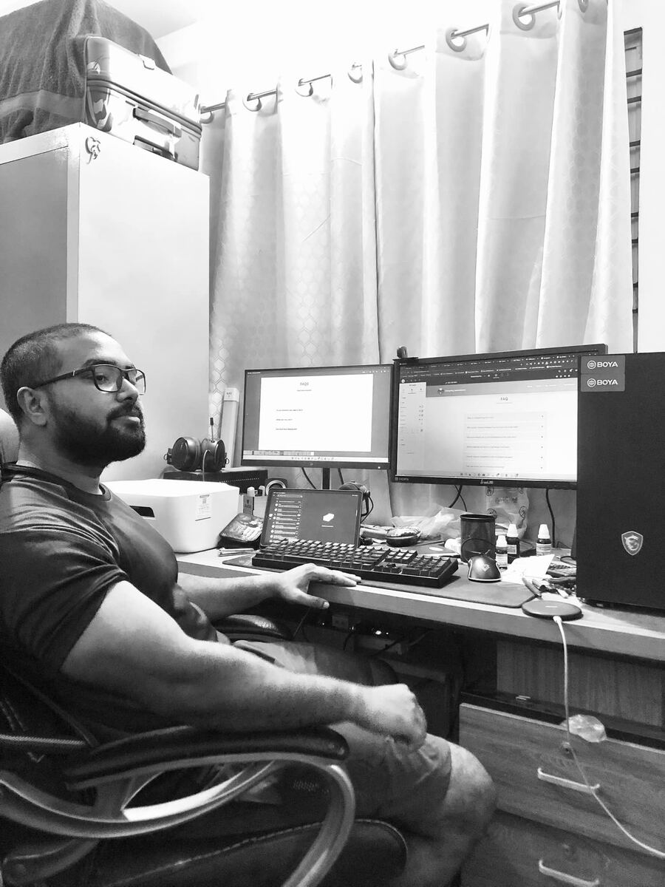

01 The longer version
From a CSE lab to the CEO’s chair.

I studied Computer Science & Engineering at Stamford University Bangladesh, graduating in 2022. The projects from those years were practical ones: a small-business management system and a university attendance system in ASP.NET MVC, and a driver-drowsiness detector that used a convolutional neural network in Python. Alongside the degree I took hands-on courses in web design, C#/.NET programming and cybersecurity.
While still studying, in January 2020, I joined Surjamukhi Sangstha (SMS), a non-governmental organisation in Bangladesh, to run its IT and manage projects — including programme work with the International Labour Organization (ILO) and Dhaka South City Corporation. That is where I learned that a project is mostly people, deadlines and reporting, and only partly technology.
The same year I started freelancing on Fiverr, building websites for clients in other countries. That work grew into what I do now: WordPress, Elementor Pro, WooCommerce and Shopify builds, custom web applications, and the GoHighLevel and n8n automations that make a website capture leads and follow up on its own. You can see live examples on the home page.
I went on to a master's in Information Technology at the Institute of Information Technology, Jahangirnagar University, and co-founded ED Shield Solutions, a web design and development company in Dhaka. On 26 October 2026 I became Chief Executive Officer of Surjamukhi Sangstha.